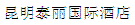
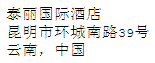

CSWIM 2008 Venue / Hotel

TaiLi International Hotel (a 4 star hotel). The address is as follows:| Chinese Version | English Version |
|
 |
TaiLi International Hotel 39 City Loop Road South KunMing, YunNan Province, P.R. China |
Tel: +86 871 330 5888
Fax: +86 871 330 5999
Conference Discount Price through YunNan University of Finance and Economics:
Standard Room: RMB240 (around $35) per night
Adding beds to the room is possible with extra minor charge.
Note: Participants do NOT need to book the hotel by themselves. Please send Dr. Wang, Li an email (wangli1977@gmail.com) to indicate what period you want to stay in the conference hotel and he will book it for you. For those participants who have already booked hotel rooms in ChengDu with him through email before, you do not need to rebook hotel in KunMing (unless there are changes in your schedule). Dr. Wang will transfer your booking to the TaiLi Hotel in Kun-Ming.
 The conference hotel is very close to the Kun-Ming airport or train station. It is about 5 kilometers from the airport and the taxi ride costs about 15 RMB (about $2.5). The train station is even closer.
The conference hotel is very close to the Kun-Ming airport or train station. It is about 5 kilometers from the airport and the taxi ride costs about 15 RMB (about $2.5). The train station is even closer.
When checking in at the hotel, please make sure to mention that you are participating in the CSWIM 2008. The hotel staff might not know the full conference name but if you mention "the Second Conference on Information..." they will be able to make the connection.